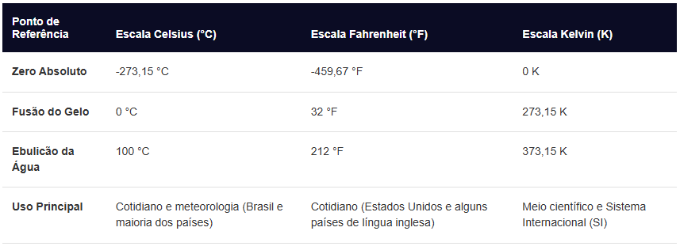

Escala de Temperatura
As três principais escalas de temperatura utilizadas no mundo atualmente são a Celsius (°C), a Fahrenheit (°F) e a Kelvin (K). Elas usam como base pontos de referência fixos, como o congelamento e a ebulição da água sob pressão atmosférica normal.
Comparação das Escalas:
A tabela abaixo mostra a relação entre os pontos fixos da água e o limite físico do universo (zero absoluto) em cada sistema:

Fórmulas de Conversão:
Para transformar o valor de uma escala para outra, utilizam-se as seguintes relações matemáticas proporcionais: